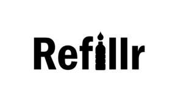

Trade Mark Journal No.2025/011 14 March 2025
UK00004155241 3 February 2025 (35)

- Class 35
- Retail services connected with the sale of eco-friendly liquid detergents, including laundry detergents, fabric softeners, dishwashing liquids, multi-purpose cleaning liquids, and professional-grade detergents suitable for commercial use, dispensed through self-service vending machines for refills in a sustainable, zero- waste manner. Vending machine services offering liquid detergent refills for home and commercial use, focusing on eco-friendly, low-waste alternatives to traditional packaged products, including detergent refills for laundry, dishes, and multi-purpose cleaning solutions; Wholesale distribution services for eco-friendly liquid detergents and cleaning products, facilitating the sale and supply of detergents and cleaning solutions from third-party brands that specialize in sustainable products; Advertising, marketing, and promotional services for eco friendly detergent brands, helping businesses promote household and professional cleaning liquids through innovative vending machines and zero waste marketing campaigns; Brand awareness campaigns and product launch support services for third-party brands, including promotions of products like laundry detergents, fabric softeners, and all-purpose cleaners via vending machine platforms and eco-friendly consumer engagement strategies; Data collection and market research services offering point-of-sale data, consumer usage patterns, and customer feedback for professional-grade detergents and household products, and providing business intelligence reports for detergent brands; Subscription-based services for detergent refills, allowing customers to subscribe to a recurring service that provides liquid detergent refills, including for dishwashing liquids and other cleaning products, with membership rewards and incentives for eco-conscious behavior; Customer loyalty programs offering incentives, rewards, and exclusive promotions for customers who participate in subscription-based refills, incentivizing repeat usage of detergent vending machines for products like dishwashing liquids and other cleaning solutions; Provision of business consultancy services for detergent brands, advising on sustainable retail solutions, eco-friendly packaging, product distribution strategies, and business-to-business partnerships, specifically in the detergent and cleaning products sector; Retail and wholesale services connected with the sale of eco-friendly liquid detergents and refill stations, providing alternatives to single-use plastic containers, promoting the use of reusable containers for detergent refills, and offering professional-grade liquid detergents for businesses; Sustainability promotion services through zero-waste detergent refill stations for products like dishwashing liquids and other cleaning solutions, enabling consumers and businesses to reduce their environmental footprint by refilling instead of buying pre-packaged products; Eco-friendly product marketing, utilizing both physical vending stations and online platforms to offer customers the ability to track usage, locate refill stations, and access subscription-based services for products like liquid detergents; Business-to-business services offering vending machine placement, maintenance, and support for detergent refills in commercial locations like student accommodations, corporate offices, hotels, and restaurants that require professional-grade liquid detergents and other cleaning supplies; Environmental sustainability consultancy services, assisting businesses in adopting zero-waste detergent refill systems and transitioning to eco-friendly product offerings, including dishwashing liquids and other cleaning solutions in refillable formats; Consumer behavior research services, analyzing trends in dishwashing liquid usage, refill station adoption, and eco-friendly detergent preferences for both home use and commercial applications such as restaurant dishwashing systems; Event marketing services, providing vending machines for product promotions at trade shows, sustainability events, and marketing campaigns specifically for liquid detergents and other cleaning solutions; Software and data management services offering cloud-based management systems, inventory tracking software, and subscription management tools for customers and detergent brands, enabling efficient operation of detergent vending machines and customer interaction; Logistics and supply chain management services to ensure the consistent supply of liquid detergents, including dishwashing liquids and laundry detergents, to vending machines and refill stations, ensuring regular product replenishment.
blvd ltd